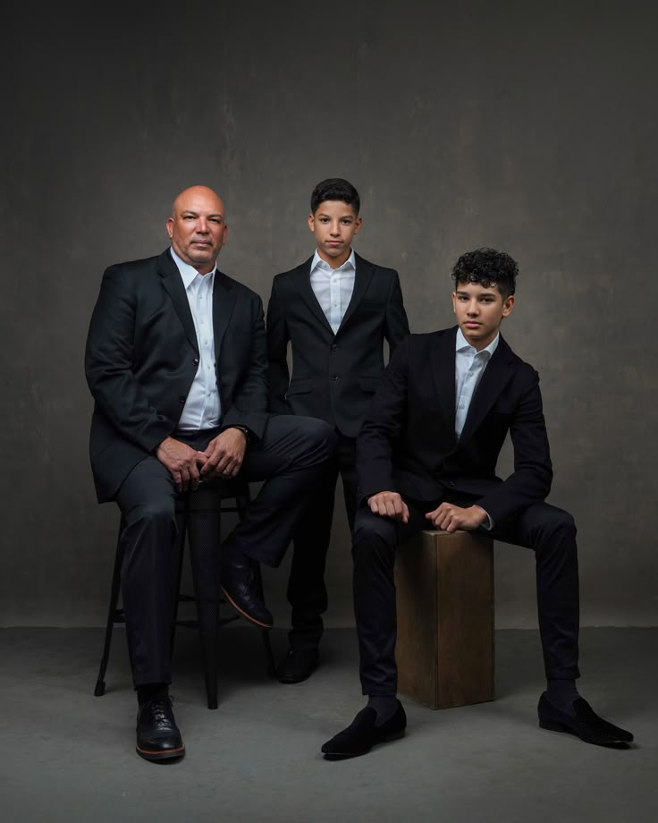

PRATEEK
Bhiwandi, Maharashtra
Specialists in fancy and value-added yarns — 2-ply and 3-ply constructions across 300+ product variants specializing in custom textures, colours, and performance features beyond standard commodities.
DISCOVER PRATEEKAcross three specialized facilities — Spinning, Dyeing & Specialty Yarn, for Shirting, Suiting, Dress Materials and Home Furnishing.
Bhiwandi, Maharashtra
Specialists in fancy and value-added yarns — 2-ply and 3-ply constructions across 300+ product variants specializing in custom textures, colours, and performance features beyond standard commodities.
DISCOVER PRATEEK
Guntur, Andhra Pradesh
High-capacity PV yarn manufacturing with focus on maintaining Polyester's durability with viscose's silk-like drape. Value addition includes custom blend ratio's like 65/35 or 50/50, multi-color space-dying and specialized textures.
DISCOVER KK SPINTEX
Palsana, Gujarat
Engineered to introduce intentional structural irregularities, unique tactile textures, & distinct color patterns. Unlike standard uniform threads, fancy yarns prioritize aesthetic appeal. And have various methods of manufacturing.
DISCOVER GB YARNDeliver high-quality yarn solutions through innovation, reliability and operational excellence.
To be India's most trusted integrated yarn manufacturing group.
Built on trust, strengthened by quality, delivering excellence for generations.

From raw spinning to finished dyed yarn — engineered for shirting, suiting and home furnishing fabrics.
From spinning to dyeing, critical processes remain in-house.
Advanced infrastructure and large-scale production capabilities.
In-house labs, strict quality controls and colour consistency.
Deep expertise in shirting, suiting and furnishing yarns.
Consistency, reliability and long-term trust built over the years.
Well-connected facilities ensuring efficient supply and service.
Three strategically located facilities enabling us to serve customers across the country with efficiency and reliability.
Prateek
Fancy Yarn Manufacturing
KK Spintex
PV Yarn Production
GB Dyed Yarn
Dyeing & Texturizing
We offer consistent quality, customized solutions and on-time delivery to support your business growth.
GET IN TOUCH